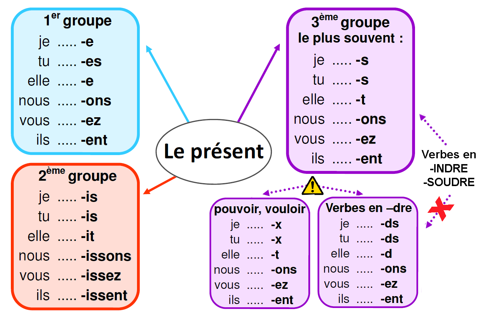

Le présent de l'indicatif
À retenir
Le présent de l'indicatif est un temps simple. Il exprime des faits qui se déroulent au moment où l'on parle, mais pas seulement ! Il a de très nombreuses valeurs que nous allons découvrir.
La conjugaison
1er groupe (verbes en -er)
2ème groupe (verbes en -ir)
3ème groupe (verbes irréguliers)
Les verbes irréguliers à connaître
ÊTRE
AVOIR
ALLER
Pour aller plus loin
Le présent a de nombreuses valeurs selon le contexte. Rendez-vous dans l'onglet "Valeurs" pour les découvrir en détail !
Les valeurs du présent
Comprendre les valeurs
Le présent ne sert pas seulement à parler de ce qui se passe maintenant ! Selon le contexte, il peut exprimer des choses très différentes. On distingue deux grandes catégories :
🔵 LES VALEURS DANS LE DISCOURS (quand on parle, on écrit une lettre, un dialogue...)
🟡 LES VALEURS DANS LE RÉCIT (dans un roman, un conte, un fait divers...)
Dans le DISCOURS
Présent d'énonciation
L'action se déroule au moment où l'on parle. C'est la valeur la plus simple !
En ce moment, je mange une pomme.
Tu écoutes de la musique ?
Nous sommes en train de réviser.
Présent de vérité générale
Il exprime des faits toujours vrais, des lois scientifiques, des proverbes.
La Terre tourne autour du Soleil.
L'eau bout à 100 degrés.
Qui veut voyager loin ménage sa monture.
Présent d'habitude
Il décrit des actions qui se répètent régulièrement.
Je vais au collège tous les jours.
Nous dînons à 19h30 en semaine.
Le dimanche, ils vont à la pêche.
Futur proche
Avec un indicateur de temps, le présent peut exprimer une action future qui va se réaliser très bientôt.
Demain, je pars en vacances.
Ce soir, nous allons au cinéma.
J'arrive tout de suite !
Passé récent
Avec "venir de", le présent exprime une action qui vient de se produire.
Le boulanger sort à l'instant.
J'apprends la nouvelle à l'instant.
Il arrive juste.
Présent de supposition
Dans des questions, le présent peut exprimer une hypothèse.
Si je comprends bien, tu ne viens pas ?
Tu veux dire qu'il est parti ?
Dans le RÉCIT
Présent de narration (ou présent historique)
On utilise le présent pour raconter des événements passés, ce qui les rend plus vivants. C'est très courant dans les récits historiques.
En 1789, le peuple prend la Bastille.
Christophe Colomb découvre l'Amérique en 1492.
Louis XIV fait construire Versailles.
Présent de description
Dans un récit au passé, on peut utiliser le présent pour décrire un personnage, un lieu, comme si on y était.
Il était une fois une princesse qui vivait dans un château. Autour d'elle, tout est beau, tout brille...
Je voyais la mer au loin, elle est calme, elle reflète le ciel.
Présent pour une action passée soudaine
Dans un récit, on peut passer du passé au présent pour marquer une action soudaine et la rendre plus frappante.
Il marchait tranquillement quand soudain un chien bondit devant lui.
J'étais en train de lire quand la porte s'ouvre brutalement.
À retenir
Le présent est un temps caméléon ! Il peut parler du présent, du passé ou du futur selon le contexte. La clé pour l'identifier est de regarder les indicateurs de temps (aujourd'hui, demain, en 1789, tous les jours...) et le type de texte (discours ou récit).
Exceptions et pièges
Certains verbes ne suivent pas les règles standards de conjugaison au présent. Voici les principales exceptions :
Verbes en -oyer, -uyer, -ayer
Règle : Ils changent le y en i devant un e muet.
• nettoyer → je nettoie, tu nettoies, il nettoie, nous nettoyons, vous nettoyez, ils nettoient
• essayer → j'essaie (ou j'essaye), tu essaies, il essaie, nous essayons, vous essayez, ils essaient
• ennuyer → j'ennuie, tu ennuies, il ennuie, nous ennuyons, vous ennuyez, ils ennuient
Verbes en -eler, -eter
La plupart : doublement de la consonne l ou t.
• appeler → j'appelle, tu appelles, il appelle, nous appelons, vous appelez, ils appellent
• jeter → je jette, tu jettes, il jette, nous jetons, vous jetez, ils jettent
Exceptions (accent grave) : acheter, geler, haleter, harceler, peler...
• acheter → j'achète, tu achètes, il achète, nous achetons, vous achetez, ils achètent
• geler → je gèle, tu gèles, il gèle, nous gelons, vous gelez, ils gèlent
Verbes en -cer, -ger
Verbes en -cer : prennent une cédille devant a et o.
• lancer → je lance, tu lances, il lance, nous lançons, vous lancez, ils lancent
Verbes en -ger : gardent le e après g devant a et o.
• manger → je mange, tu manges, il mange, nous mangeons, vous mangez, ils mangent
Verbes du 3ème groupe
Ils sont très irréguliers ! Voici les plus courants :
• aller → je vais, tu vas, il va, nous allons, vous allez, ils vont
• venir → je viens, tu viens, il vient, nous venons, vous venez, ils viennent
• pouvoir → je peux, tu peux, il peut, nous pouvons, vous pouvez, ils peuvent
• vouloir → je veux, tu veux, il veut, nous voulons, vous voulez, ils veulent
• voir → je vois, tu vois, il voit, nous voyons, vous voyez, ils voient
• dire → je dis, tu dis, il dit, nous disons, vous dites, ils disent
• faire → je fais, tu fais, il fait, nous faisons, vous faites, ils font
Cartes mentales
Conjugaison du présent

Valeurs du présent